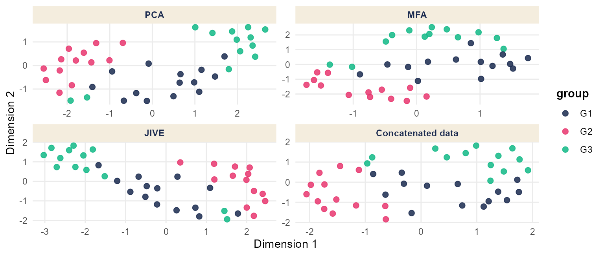

The input format
factomics needs a named list of numeric matrices, one per omics layer, with features in rows and samples in columns. Column names are sample IDs and must be the same set in every matrix (the order may differ; factomics aligns them). Row names are feature IDs.
X <- list(
transcriptome = <genes x samples matrix>,
metabolome = <metabolites x samples matrix>,
microbiome = <taxa x samples matrix>
)Metadata is a data frame with one row per sample and a column holding
the sample IDs ("sample" by default; set
sample_col otherwise).
Reading CSV or Excel files
If each file has feature IDs in the first column and one column per sample:
read_view <- function(path) as.matrix(read.csv(path, row.names = 1,
check.names = FALSE))
X <- list(
rna = read_view("data/rna_counts_normalised.csv"),
met = read_view("data/metabolites.csv")
)
meta <- read.csv("data/metadata.csv")For Excel files, readxl::read_excel() gives a data
frame; move the first column to the row names before
as.matrix():
read_xlsx_view <- function(path, sheet = 1) {
df <- as.data.frame(readxl::read_excel(path, sheet = sheet))
rownames(df) <- df[[1]]
as.matrix(df[, -1])
}If your files are samples x features instead,
transpose with t().
Preprocessing advice
factomics z-scores each feature by default
(scale_features = TRUE). What it does not
do is the omics-specific normalisation, which you should apply
first:
| Data type | Typical preparation |
|---|---|
| RNA-seq counts | library-size normalisation and a log or variance-stabilising
transform (e.g. DESeq2::vst()) |
| Microbiome counts | filter rare taxa, then a centred log-ratio (CLR) transform |
| Metabolomics / lipidomics | log transform, impute or drop features with many missing values |
| Methylation | M-values rather than beta values |
Also consider keeping only the most variable features per view (for example the top 2,000 genes), which speeds every method up and removes noise:
top_var <- function(m, n) m[order(-apply(m, 1, var))[seq_len(min(n, nrow(m)))], ]
X$rna <- top_var(X$rna, 2000)Missing values are set to zero after scaling (that is, to the feature mean). MOFA2 can model missing values natively; for the other methods, impute or remove heavily missing features beforehand.
A worked example with files
To show the whole route, we write simulated data to CSV files, read them back and analyse them:
library(factomics)
sim <- simulate_multiomics(n_samples = 40, seed = 2)
dir <- tempfile("mydata"); dir.create(dir)
for (v in names(sim$data))
write.csv(sim$data[[v]], file.path(dir, paste0(v, ".csv")))
write.csv(sim$metadata, file.path(dir, "metadata.csv"), row.names = FALSE)
files <- list.files(dir, pattern = "csv$", full.names = TRUE)
files <- files[basename(files) != "metadata.csv"]
X <- lapply(setNames(files, sub("\\.csv$", "", basename(files))),
function(f) as.matrix(read.csv(f, row.names = 1,
check.names = FALSE)))
meta <- read.csv(file.path(dir, "metadata.csv"))
fx <- factomics(X, metadata = meta, methods = c("PCA", "MFA", "JIVE"), k = 3,
embeddings = "umap", verbose = FALSE)
fx
#> <factomics workflow>
#> <factomics_results>
#> 40 samples, 3 view(s): metabolome (80), microbiome (50), transcriptome (200)
#> PCA 3 factors
#> MFA 3 factors
#> JIVE 3 factors
#> Embeddings: UMAP
#> Clustering:
#> method algorithm k silhouette
#> PCA kmeans 4 0.367
#> MFA kmeans 4 0.368
#> JIVE kmeans 4 0.366
#> Concatenated data kmeans 2 0.111
#> Benchmark (mean |r| of matched factor scores):
#> pair mean_abs_corr_scores
#> PCA vs MFA 1.000
#> PCA vs JIVE 0.999
#> MFA vs JIVE 0.999
plot_embedding(fx$embeddings, meta, color_by = "group")
Save everything as CSV tables:
out <- export_results(fx, file.path(dir, "results"))
basename(out)
#> [1] "PCA_scores.csv" "PCA_loadings.csv" "MFA_scores.csv"
#> [4] "MFA_loadings.csv" "JIVE_scores.csv" "JIVE_loadings.csv"
#> [7] "variance_explained.csv" "clusters.csv" "cluster_summary.csv"
#> [10] "embeddings.csv" "benchmark_scores.csv"